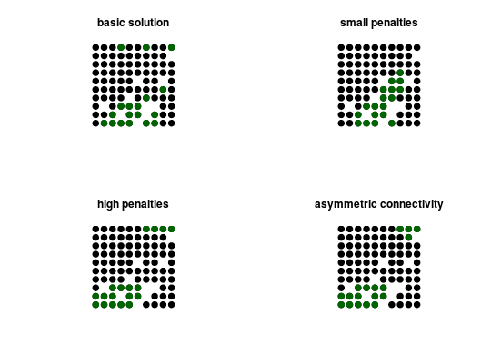

Add penalties to a conservation problem to favor solutions that select planning units with high connectivity between them.
add_connectivity_penalties(x, penalty, connectivity_data)
ConservationProblem-class object.numeric penalty for missing connections between
planning units. This is equivalent to the connectivity strength modifier
(CSM; (XXX et al. XXXX). Defaults to one so that penalties are the
same as the values in the data.data.frame, matrix, Matrix
object that shows the strength of connectivity between consecutive planning
units. If data is a matrix, then rows and columns represent
each planing unit and the cell values represent the connectivity between
them. If data is a data.frame the column names
be "id1", "id2", "boundary" where each row
shows the connectivity between two planning units (following the Marxan
format). The data can be describe symmetric or asymmetric
connecitivity between planning units.ConservationProblem-class object.
# load data data(sim_pu_points, sim_features) # create a symmetric connectivity matrix where the connectivity between # two planning units is the inverse distance between them sc_matrix <- (1 / (as.matrix(dist(sim_pu_points@coords)) + 1)) # remove connections between planning unitswith little connectivity sc_matrix[sc_matrix < 0.85] <- 0 # create basic problem p1 <- problem(sim_pu_points, sim_features) %>% add_min_set_objective() %>% add_relative_targets(0.2) # create problem with low connectivity penalties p2 <- p1 %>% add_connectivity_penalties(25, sc_matrix) # create problem with higher connectivity penalties p3 <- p1 %>% add_connectivity_penalties(50, sc_matrix) # create an asymmetric connectivity matrix where links from even numered # units to odd numbered units have half the connectivity as from odd # numbered units to even units even_units <- seq(2, length(sim_pu_points), 2) odd_units <- seq(1, length(sim_pu_points), 2) ac_matrix <- sc_matrix ac_matrix[even_units, odd_units] <- 0.5 * ac_matrix[even_units, odd_units] # create problem with asymmetric connectivity and high penalties p4 <- p1 %>% add_connectivity_penalties(50, ac_matrix) # solve problems s <- list(solve(p1), solve(p2), solve(p3), solve(p4))#> Optimize a model with 5 rows, 90 columns and 450 nonzeros #> Variable types: 0 continuous, 90 integer (90 binary) #> Coefficient statistics: #> Matrix range [2e-01, 9e-01] #> Objective range [2e+02, 2e+02] #> Bounds range [1e+00, 1e+00] #> RHS range [6e+00, 1e+01] #> Found heuristic solution: objective 4129.88 #> Presolve time: 0.00s #> Presolved: 5 rows, 90 columns, 450 nonzeros #> Variable types: 0 continuous, 90 integer (90 binary) #> Presolved: 5 rows, 90 columns, 450 nonzeros #> #> #> Root relaxation: objective 3.477758e+03, 12 iterations, 0.00 seconds #> #> Nodes | Current Node | Objective Bounds | Work #> Expl Unexpl | Obj Depth IntInf | Incumbent BestBd Gap | It/Node Time #> #> 0 0 3477.75820 0 4 4129.87913 3477.75820 15.8% - 0s #> H 0 0 3573.8721018 3477.75820 2.69% - 0s #> #> Explored 0 nodes (12 simplex iterations) in 0.00 seconds #> Thread count was 1 (of 4 available processors) #> #> Solution count 2: 3573.87 4129.88 #> Pool objective bound 3477.76 #> #> Optimal solution found (tolerance 1.00e-01) #> Best objective 3.573872101823e+03, best bound 3.477758197751e+03, gap 2.6893% #> Optimize a model with 555 rows, 365 columns and 1550 nonzeros #> Variable types: 0 continuous, 365 integer (365 binary) #> Coefficient statistics: #> Matrix range [2e-01, 1e+00] #> Objective range [4e+01, 4e+02] #> Bounds range [1e+00, 1e+00] #> RHS range [6e+00, 1e+01] #> Found heuristic solution: objective 5232.59 #> Presolve time: 0.00s #> Presolved: 555 rows, 365 columns, 1550 nonzeros #> Variable types: 0 continuous, 365 integer (365 binary) #> Presolved: 555 rows, 365 columns, 1550 nonzeros #> #> #> Root relaxation: objective 4.139000e+03, 572 iterations, 0.01 seconds #> #> Nodes | Current Node | Objective Bounds | Work #> Expl Unexpl | Obj Depth IntInf | Incumbent BestBd Gap | It/Node Time #> #> 0 0 4138.99961 0 365 5232.59212 4138.99961 20.9% - 0s #> 0 0 4175.03335 0 361 5232.59212 4175.03335 20.2% - 0s #> 0 0 4188.27614 0 360 5232.59212 4188.27614 20.0% - 0s #> 0 0 4216.38389 0 357 5232.59212 4216.38389 19.4% - 0s #> 0 0 4226.71950 0 358 5232.59212 4226.71950 19.2% - 0s #> 0 0 4253.43224 0 354 5232.59212 4253.43224 18.7% - 0s #> 0 0 4255.27712 0 355 5232.59212 4255.27712 18.7% - 0s #> H 0 0 4843.9428736 4255.27712 12.2% - 1s #> H 0 0 4756.7494482 4255.27712 10.5% - 1s #> 0 2 4255.65714 0 355 4756.74945 4255.65714 10.5% - 1s #> #> Cutting planes: #> Gomory: 6 #> #> Explored 46 nodes (3013 simplex iterations) in 1.17 seconds #> Thread count was 1 (of 4 available processors) #> #> Solution count 3: 4756.75 4843.94 5232.59 #> Pool objective bound 4297.3 #> #> Optimal solution found (tolerance 1.00e-01) #> Best objective 4.756749448177e+03, best bound 4.297302216014e+03, gap 9.6588% #> Optimize a model with 555 rows, 365 columns and 1550 nonzeros #> Variable types: 0 continuous, 365 integer (365 binary) #> Coefficient statistics: #> Matrix range [2e-01, 1e+00] #> Objective range [9e+01, 6e+02] #> Bounds range [1e+00, 1e+00] #> RHS range [6e+00, 1e+01] #> Found heuristic solution: objective 6335.31 #> Presolve time: 0.00s #> Presolved: 555 rows, 365 columns, 1550 nonzeros #> Variable types: 0 continuous, 365 integer (365 binary) #> Presolved: 555 rows, 365 columns, 1550 nonzeros #> #> #> Root relaxation: objective 4.589000e+03, 589 iterations, 0.01 seconds #> #> Nodes | Current Node | Objective Bounds | Work #> Expl Unexpl | Obj Depth IntInf | Incumbent BestBd Gap | It/Node Time #> #> 0 0 4588.99961 0 365 6335.30511 4588.99961 27.6% - 0s #> 0 0 4659.08767 0 361 6335.30511 4659.08767 26.5% - 0s #> 0 0 4663.49504 0 361 6335.30511 4663.49504 26.4% - 0s #> 0 0 4720.21890 0 359 6335.30511 4720.21890 25.5% - 0s #> 0 0 4781.92448 0 355 6335.30511 4781.92448 24.5% - 0s #> 0 0 4784.76956 0 356 6335.30511 4784.76956 24.5% - 0s #> 0 0 4785.71600 0 356 6335.30511 4785.71600 24.5% - 0s #> 0 0 4785.71600 0 356 6335.30511 4785.71600 24.5% - 0s #> H 0 0 6190.7344980 4785.71600 22.7% - 1s #> 0 2 4786.48200 0 356 6190.73450 4786.48200 22.7% - 1s #> H 621 294 6075.2233763 5185.11097 14.7% 35.8 2s #> * 633 278 51 6066.6730300 5185.11097 14.5% 35.3 2s #> H 730 268 5973.7211891 5185.11097 13.2% 34.9 3s #> H 731 254 5967.0968018 5185.11097 13.1% 34.9 3s #> H 761 245 5931.6404415 5185.11097 12.6% 35.0 3s #> H 909 221 5814.0474633 5185.11097 10.8% 33.5 3s #> #> Explored 983 nodes (33164 simplex iterations) in 3.49 seconds #> Thread count was 1 (of 4 available processors) #> #> Solution count 8: 5814.05 5931.64 5967.1 ... 6335.31 #> Pool objective bound 5270.18 #> #> Optimal solution found (tolerance 1.00e-01) #> Best objective 5.814047463344e+03, best bound 5.270181163369e+03, gap 9.3543% #> Optimize a model with 555 rows, 365 columns and 1550 nonzeros #> Variable types: 0 continuous, 365 integer (365 binary) #> Coefficient statistics: #> Matrix range [2e-01, 1e+00] #> Objective range [7e+01, 6e+02] #> Bounds range [1e+00, 1e+00] #> RHS range [6e+00, 1e+01] #> Found heuristic solution: objective 6177.86 #> Presolve time: 0.00s #> Presolved: 555 rows, 365 columns, 1550 nonzeros #> Variable types: 0 continuous, 365 integer (365 binary) #> Presolved: 555 rows, 365 columns, 1550 nonzeros #> #> #> Root relaxation: objective 4.589000e+03, 493 iterations, 0.01 seconds #> #> Nodes | Current Node | Objective Bounds | Work #> Expl Unexpl | Obj Depth IntInf | Incumbent BestBd Gap | It/Node Time #> #> 0 0 4588.99961 0 365 6177.86371 4588.99961 25.7% - 0s #> 0 0 4648.09404 0 361 6177.86371 4648.09404 24.8% - 1s #> 0 0 4692.17640 0 358 6177.86371 4692.17640 24.0% - 1s #> 0 0 4715.48349 0 358 6177.86371 4715.48349 23.7% - 1s #> 0 0 4759.12115 0 355 6177.86371 4759.12115 23.0% - 1s #> 0 0 4764.54877 0 356 6177.86371 4764.54877 22.9% - 1s #> 0 0 4767.26797 0 357 6177.86371 4767.26797 22.8% - 1s #> H 0 0 6018.9089431 4767.26797 20.8% - 1s #> 0 2 4767.37879 0 357 6018.90894 4767.37879 20.8% - 1s #> H 54 47 6016.2039261 4815.09578 20.0% 35.1 1s #> H 84 54 5926.2468080 4815.09578 18.7% 32.1 1s #> H 204 128 5910.6668897 4910.53096 16.9% 31.1 1s #> H 231 129 5795.7296165 4944.38656 14.7% 31.5 1s #> H 245 128 5688.0604299 4944.38656 13.1% 31.0 1s #> H 462 216 5685.4313211 5106.54402 10.2% 31.5 2s #> #> Cutting planes: #> Gomory: 6 #> #> Explored 489 nodes (15909 simplex iterations) in 2.24 seconds #> Thread count was 1 (of 4 available processors) #> #> Solution count 8: 5685.43 5688.06 5795.73 ... 6177.86 #> Pool objective bound 5122.37 #> #> Optimal solution found (tolerance 1.00e-01) #> Best objective 5.685431321092e+03, best bound 5.122372878825e+03, gap 9.9035%# plot solutions par(mfrow=c(2,2)) plot(s[[1]], pch=19, main="basic solution", cex = 1.5) points(s[[1]][s[[1]]$solution==1, ], col = "darkgreen", pch = 19, cex = 1.5) plot(s[[2]], pch=19, main="small penalties", cex = 1.5) points(s[[2]][s[[2]]$solution==1, ], col = "darkgreen", pch = 19, cex = 1.5) plot(s[[3]], pch=19, main="high penalties", cex = 1.5) points(s[[3]][s[[3]]$solution==1, ], col = "darkgreen", pch = 19, cex = 1.5) plot(s[[4]], pch=19, main="asymmetric connectivity", cex = 1.5)points(s[[4]][s[[4]]$solution==1, ], col = "darkgreen", pch=19, cex = 1.5)